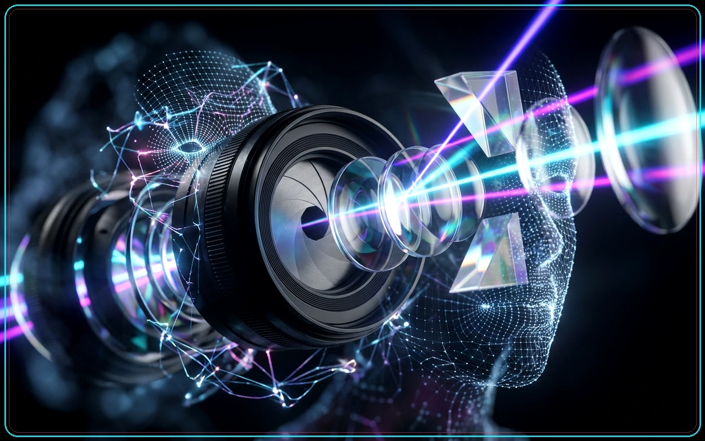
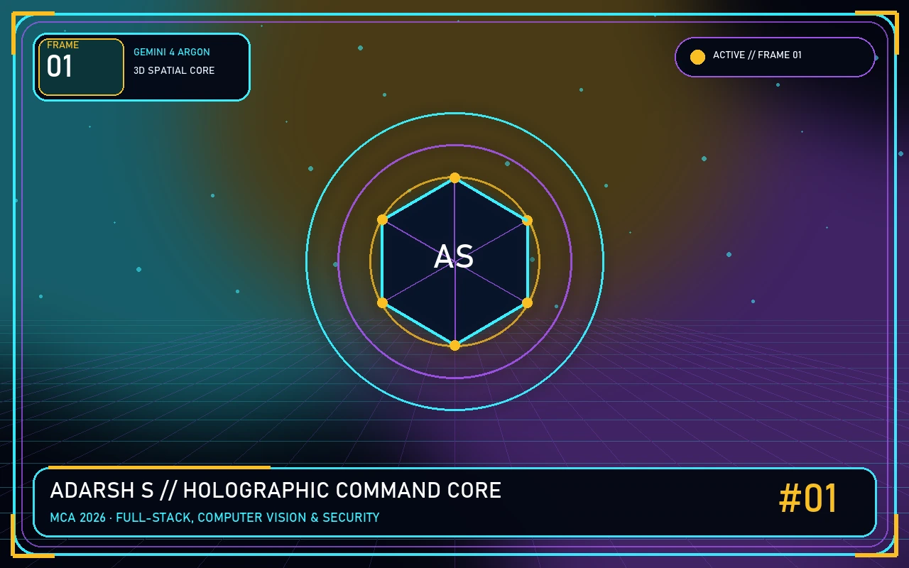
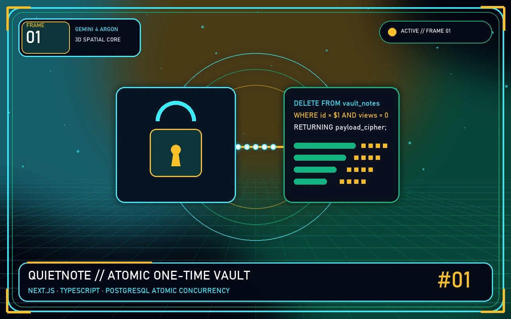
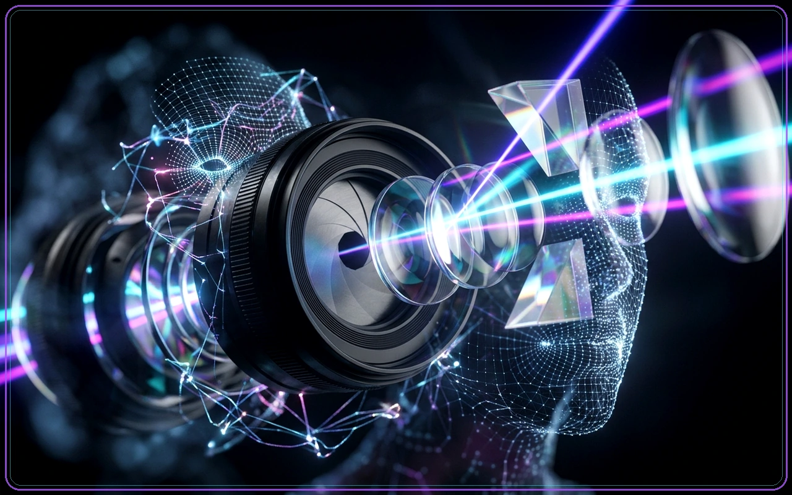
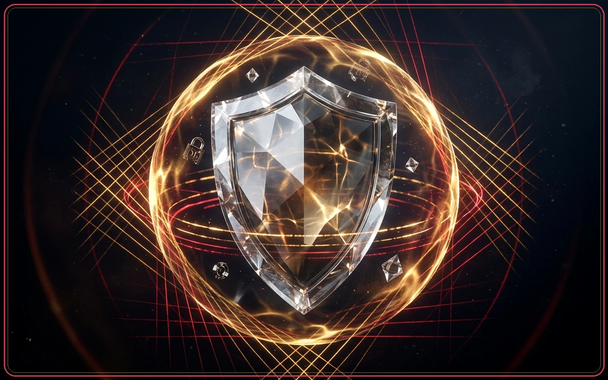
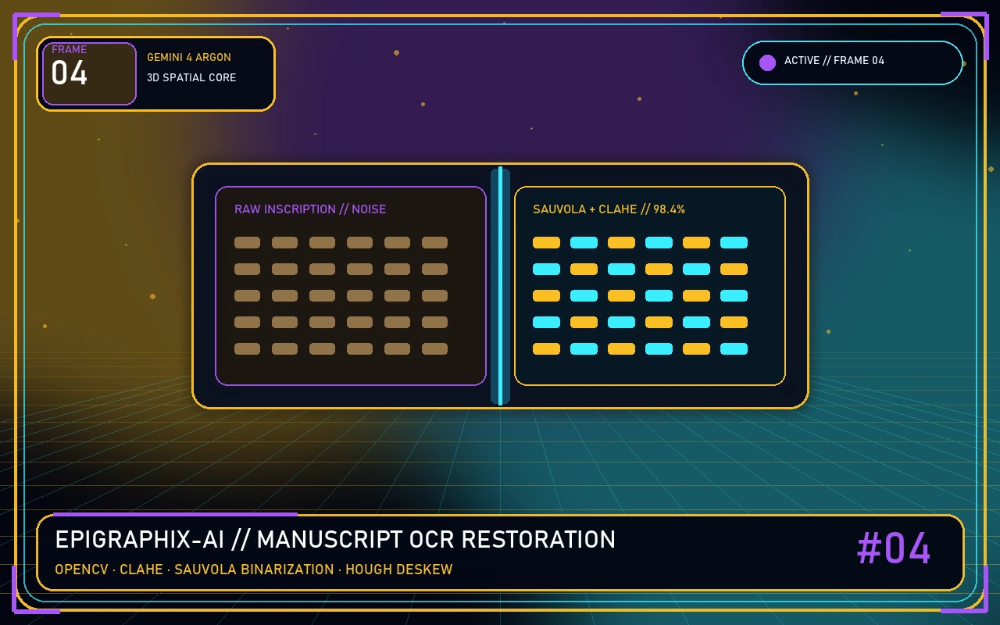
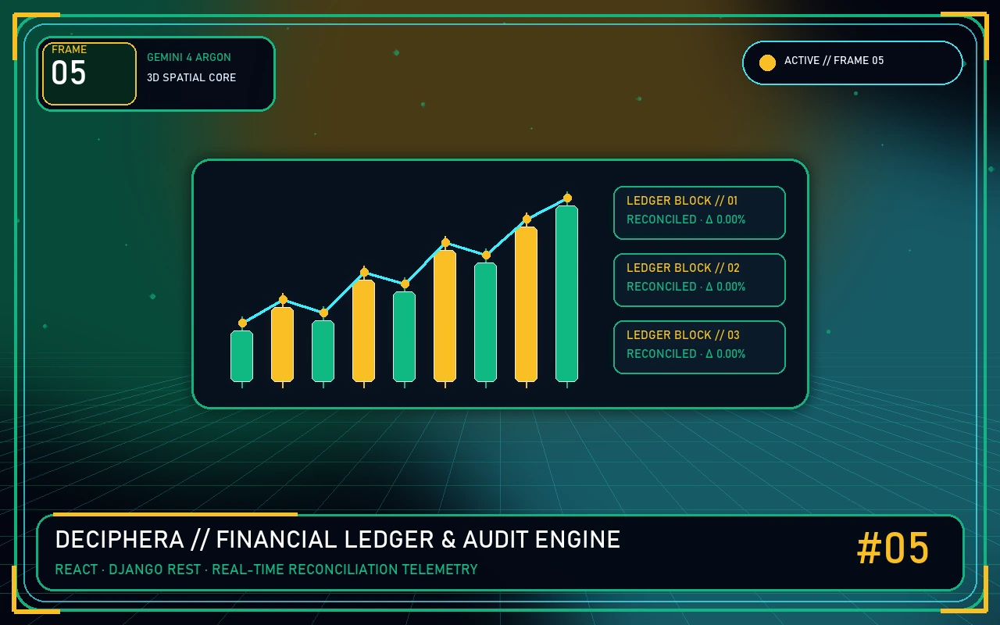
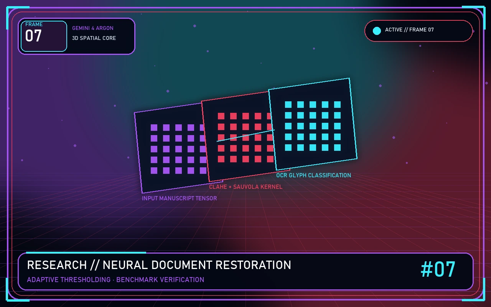

KOZHIKODE, INDIA
✳ ADARSH S — SOFTWARE & AI
BUILD. BEYOND. Curiosity, in a new dimension.
Human ideas. Real
software.
Full-stack engineering, computer vision and research. I turn complex questions into software with a human purpose.
PORTRAIT / 01
ADARSH.S ● ● ●
Adarsh S. MCA ’26 · SOFTWARE & AI
as/ 
AI VISION · 3D FRAME 
HOLO PORTRAIT · 01 ⌘ ENGINEERING WITH INTENTPYTHON · REACT · OPENCV
✳ Developer card ↗ SCROLL TO CHANGE PERSPECTIVE
MAKE IT MATTER. THINK. ✳ BUILD. ✳ REPEAT. ✳ THINK. ✳ BUILD.
CURIOSITY IS A PRACTICE. SCROLL INTO MY WORLD ↘
01 / SELECTED DIMENSIONS
Built with purpose.Explored in depth. KEEP SCROLLING → Three different problems.
01 / FULL-STACK ENGINEERING
QuietNote. A message.
Expiring, revocable notes with PostgreSQL-enforced one-time access. Built to make short-lived sharing feel simple.
NEXT.JS TYPESCRIPT POSTGRESQL
Explore QuietNote ↗ 01 SHARE / EXPIRE 
AI-GENERATED CONCEPT ART · NOT AN APP SCREENSHOT
02 / COMPUTER VISION
AssentTag. Your face.
Privacy-aware photo sharing that makes facial consent part of the workflow, using recognition and selective blurring.
DJANGO OPENCV DLIB
Explore AssentTag ↗ 02 RECOGNISE / PROTECT 
AI-GENERATED CONCEPT ART · NOT AN APP SCREENSHOT
03 / SECURITY TOOLING
AegisForge-X. Find the risk.
Source-security review that connects findings to code locations and cryptographic evidence. A tool to support human review.
PYTHON STATIC ANALYSIS SHA-256
Explore AegisForge-X ↗ 03 INSPECT / UNDERSTAND 
AI-GENERATED CONCEPT ART · NOT AN APP SCREENSHOT
SOFTWARE ENGINEERING ✳ COMPUTER VISION ✳ BUILT WITH
PURPOSE ✳ AI & RESEARCH ✳ SOFTWARE ENGINEERING ✳ COMPUTER VISION ✳ BUILT WITH
PURPOSE ✳ AI & RESEARCH ✳
PRESS PLAY / MEET THE PROJECTS
Ideas, in motion. A quick visual tour of the problems
ADARSH S — SELECTED WORK FULL STACK · VISION · SECURITY
Your browser cannot play this video. Explore the project case studies below.
A motion graphic introduction using conceptual project artwork. Explore each case study below for implementation details and demos.
01 / A LITTLE CONTEXT
Curious by nature.Engineer by practice.
I work at the intersection of
software, intelligence and trust. From protecting faces
in shared photos to reading historical manuscripts, I like solving
problems with a clear human purpose.
I’m a 2026 Master of Computer Applications graduate from
Government Engineering College, Thrissur. My work spans Django
backends, React interfaces, computer vision, data analysis and
security tooling, supported by hands-on internships.
Get the full picture — download CV ↓
FRAME 01 // HOLO STUDIO
Adarsh S · Holographic Frame PRISMATIC 3D PORTRAIT & CYBER TELEMETRY
FRAME 02 // NEURAL VISION
Computer Vision & AI Core OPENCV · DLIB · SAUVOLA OCR PIPELINES
Full-Stack & Zero-Trust Matrix DJANGO · NEXT.JS · POSTGRESQL · SHA-256
2026 MCA · GEC Thrissur
03 Industry internships
05 Selected projects below
01 IJRASET publication
HOW I THINK SCROLL TO CONNECT THE DOTS ↓
Good software starts with curiosity. And ends with something useful. Good software starts with curiosity. And ends with something useful. From the first question
✳
02 / SELECTED ENGINEERING
A few thingsI’ve built.
Privacy. Language. Security.
01
Privacy engineering / Computer vision
AssentTag
Your face. Your consent.
A privacy-first image-sharing platform that makes facial consent
part of the sharing workflow.
Face masking and identity workflows in Django.
Academic application
Python Django OpenCV Dlib MySQL
PRIVACY ENGINEERING AS / ASSENTTAG
AI-GENERATED PROJECT CONCEPT · NOT AN APP SCREENSHOT
◎
DETECT VERIFY CONSENT
SYSTEM CONCEPT / ASSENTTAG
02
Applied AI / Historical manuscripts
EpigraphiX-AI
Reading the past.
Image restoration, glyph segmentation and OCR research for
degraded historical palm-leaf manuscripts.
Restoration, segmentation and lexicon-based post-processing.
Research prototype
Python OpenCV NumPy Sauvola Segmentation
APPLIED AI AS / EPIGRAPHIX-AI

AI-GENERATED PROJECT CONCEPT · NOT AN APP SCREENSHOT
അ
RESTORE SEGMENT TRANSCRIBE
SYSTEM CONCEPT / EPIGRAPHIX-AI
03
Security tooling / Evidence integrity
AegisForge-X
Find the risk.
Source-security review that connects findings to code locations
and cryptographic evidence.
Language-aware rules, exact source positions and evidence hashes.
Security review tool
Python Static analysis SHA-256 Merkle trees
SECURITY TOOLING AS / AEGISFORGE-X
AI-GENERATED PROJECT CONCEPT · NOT AN APP SCREENSHOT
⌘
SOURCE FINDINGS PROOF
SYSTEM CONCEPT / AEGISFORGE-X
04
Bitcoin L2 / Explainable systems
Deciphera
Complex transactions.
A semantic ledger and covenant-auditing simulator for Bitcoin
off-chain transaction flows.
One simulated event explained for three different audiences.
Browser simulator
JavaScript HTML / CSS Bitcoin L2 Taproot
BITCOIN L2 AS / DECIPHERA

AI-GENERATED PROJECT CONCEPT · NOT AN APP SCREENSHOT
₿
STATE INTERPRET EXPLAIN
SYSTEM CONCEPT / DECIPHERA
05
Full-stack engineering / Secure sharing
QuietNote
Share once.
Expiring, revocable note sharing with PostgreSQL-enforced
one-time access.
A database transaction protects one-time access from concurrent readers.
Deployed proof of concept
Next.js TypeScript Hono Prisma PostgreSQL
FULL-STACK ENGINEERING AS / QUIETNOTE
AI-GENERATED PROJECT CONCEPT · NOT AN APP SCREENSHOT
N
CREATE AUTHORIZE CONSUME
SYSTEM CONCEPT / QUIETNOTE
No projects match yet. Try a broader search or choose All work.
Each case study includes source links, a review scenario and scope notes. Concept artwork is labeled; implementation evidence is linked separately.
03 / EXPERIENCE IN ORBIT
Different teams.Connected growth.
01 BuildPYTHON / DJANGO 02 ConnectREACT / APIS 03 DeliverDEVOPS / CI/CD SELECT A NODE · EXPLORE A CHAPTER
CURRENT CHAPTER 01 / 03Bluegen Solutions Dec 2025 – Mar 2026
Backend thinking. Interfaces that connect.
Dec 2025 – Mar 2026
Software Development Intern · Bluegen Solutions
Kozhikode, Kerala · On-site
Built backend application modules using Python and Django with
REST API endpoints and authentication.
Worked with normalized MySQL schemas, indexing, foreign keys,
debugging and application reliability.
Collaborated in an Agile development environment on
implementation and issue resolution.
Feb 2026 – Mar 2026
React.js Development Intern · The Skybrisk
Remote
Developed ERP modules and reusable React components for
business workflows.
Integrated REST APIs and JWT-based route protection.
Worked with dashboards, Chart.js and client-side PDF export
workflows.
Feb 2026 – Mar 2026
DevOps Intern · CODTECH IT Solutions
Remote
Automated CI/CD workflows using GitHub Actions.
Worked with Kubernetes manifests, replicas and service load
balancing.
Integrated OWASP ZAP baseline scanning into DevSecOps
workflows.
04 / RESEARCH & PUBLICATIONS
Old scripts.New possibilities.

AI-GENERATED RESEARCH CONCEPT
FIELD NOTES / 001
അ
FROM INCISION
EPIGRAPHIX–AI / 2026
PUBLISHED · IJRASET · AUGUST 2026
EpigraphiX-AI: Neural Epigraphical OCR, Topological Binarization,
Strict Manuscript Authentication, and Multi-Model Intelligence for
Degraded Historical Palm-Leaf Manuscripts
Exploring computer vision and deep learning for the restoration,
authentication and transcription of degraded historical palm-leaf
manuscripts.
Author
Adarsh S
Journal
IJRASET · Volume 14, Issue VIII
DOI
10.22214/ijraset.2026.84707
Read the publication ↗ Explore the research system →
05 / THE TOOLKIT
Tools followthe problem.
A practical stack shaped by
All disciplines Build
Intelligence Systems
01
Programming
Python Java C JavaScript PHP SQL MATLAB
02
Web & applications
HTML CSS React Django Flask Node.js REST APIs Laravel Flutter
03
AI & computer vision
OpenCV Dlib PyTorch TensorFlow Keras CNN Scikit-learn OCR
04
Data & analytics
NumPy SciPy Pandas Matplotlib Seaborn MySQL MongoDB
05
Delivery & tooling
Git GitHub Docker CI/CD Linux Postman GitHub Actions Kubernetes
06
Security & systems
Biometric verification OWASP SHA-256 Merkle trees Blockchain IoT
06 / CONTINUOUS LEARNING
Keep thelearning loop open.
AWS ↗
CloudOps Engineer – Associate
Aug 2026
TCS iON ↗
Career Edge – IT Primer
Feb 2026
Cisco Networking Academy ↗
Introduction to Modern AI
Feb 2026
Skill India Digital Hub ↗
SOAR – AI to be Aware
Jan 2026
Deloitte ↗
Technology Job Simulation
Jan 2026
Simplilearn ↗
Microsoft Excel Advanced Analytics
Dec 2025
Explore more credentials ＋
Simplilearn ↗
Deep Learning with Keras
Dec 2025
Simplilearn ↗
Google Gemini Certification
Dec 2025
NPTEL, IIT ↗
Programming in Java
Nov 2025
HackerRank ↗
SQL Basics
Sep 2025
IBM ↗
Data Analysis Using Python
Jun 2025
ScholarHat ↗
MTA: Introduction to Programming Using Python
Jun 2025
ScholarHat ↗
C Programming
Jun 2025
Simplilearn ↗
Data Science
Jun 2025
Fireflies ↗
Full Stack Development with React and Drupal
Jan 2022
07 / FOUNDATIONS
A foundationto build on.
AUG 2024 — MAY 2026
01 / POSTGRADUATE
Master of Computer Applications
Government Engineering College, Thrissur
7.5 / 10 CGPA
JUL 2019 — MAR 2022
02 / UNDERGRADUATE
B.Sc. Computer Science
College of Applied Science IHRD, Thamarassery
6.61 / 10 CGPA
JUN 2017 — MAR 2019
03 / CLASS 12
Higher Secondary Education
Biology Stream
Government Higher Secondary School, Thamarassery
79.9%
JUN 2016 — MAR 2017
04 / CLASS 10
High School Education
MGM Higher Secondary School, Engapuzha
98.8%